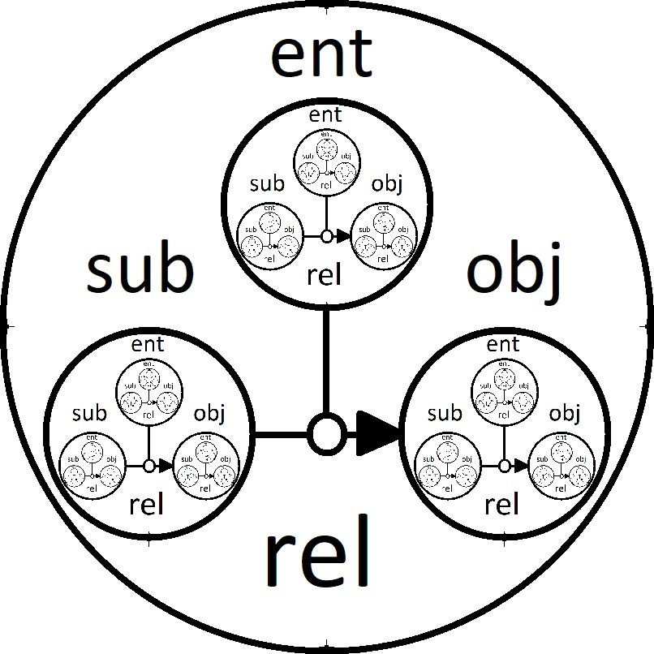

- Создано системой
 1.9.8
1.9.8
 |
jsonRVM
json Relations (Model) Virtual Machine
|
Статус: Анализ Версия: 1.0 Дата: 2026-02-26 Связанные issue: #11 Контекст: Подготовка к реализации jhub (jhub-tz.md)
jsonRVM — виртуальная машина для исполнения программ на языке «Модель Отношений» (RM), представленных в формате JSON. Реализована на C++17, версия 3.0.0.
Ключевые характеристики:
std::execution::par)| Проблема | Серьёзность | Влияние на jhub |
|---|---|---|
Загрузка DLL только на Windows (windows.h) | Критическая | jhub требует Linux/macOS/Windows |
| Кодировка CP1251 вместо UTF-8 | Высокая | API и JSON требуют UTF-8 |
| Нет CI/CD для тестирования | Высокая | jhub CI/CD требует стабильности |
Windows-специфичный синтаксис (for each) | Средняя | Не компилируется на Linux/macOS |
| Жёсткое ограничение контекстов (4 уровня) | Средняя | Ограничивает гибкость jhub pipeline |
| Отсутствие JIT/кэширования | Средняя | NFR-1: чтение репо < 100 мс |
| Нет REST API | Средняя | jhub FR-2.5, FR-3.3 требуют API |
Согласно спецификации jhub-tz.md, jsonRVM используется как:
Нефункциональные требования jhub, влияющие на выбор языка:
| Преимущество | Описание | Важность для jhub |
|---|---|---|
| Кросс-компиляция из коробки | GOOS=linux/darwin/windows GOARCH=amd64 — один инструмент | Критически важно (NFR-5) |
| Простота развёртывания | Статически слинкованный бинарник без зависимостей | jhub docker-образы компактнее |
| Встроенный HTTP/gRPC | net/http, gorilla/mux, стандартная библиотека | Нативный REST API (FR-2.5) |
| Горутины и каналы | Параллелизм на уровне языка, легче чем C++ threads | Параллельные CI/CD шаги (FR-3.6) |
| Сборщик мусора | Нет ручного управления памятью → меньше ошибок | Надёжность jhub |
| Отличная экосистема JSON | encoding/json, gjson, jsoniter — высокая производительность | Ядро jsonRVM |
| Быстрая компиляция | Go компилируется в разы быстрее C++ | CI/CD циклы короче |
| Читаемость кода | Простой синтаксис, легко онбордить контрибьюторов | Развитие проекта |
| Docker-интеграция | Большинство Cloud Native инструментов написаны на Go | Нативна для jhub стека |
| WebAssembly | GOOS=js GOARCH=wasm — Go → WASM без изменений | FR-5.1 Web GUI |
| Недостаток | Описание | Влияние |
|---|---|---|
| GC паузы | Stop-the-world GC (хотя и короткие) | NFR-1: возможные latency spikes |
| Нет generics до 1.18 | Исторически слабая система типов | Типизация RM-программ |
| Больше памяти | Go runtime потребляет ~5–10 МБ базово | Для embedded/WASM |
| Нет operator overloading | Математические операции RM менее элегантны | Код RM-интерпретатора |
| Интерфейс с C | cgo медленный и сложный | Интеграция с существующим C++ кодом |
| Производительность CPU | Go обычно медленнее Rust/C++ на 10–50% | Вычислительно-интенсивные задачи |
| Размер WASM | Go WASM binary > 2 МБ (TinyGo < 200 КБ) | Web GUI (FR-5.1) |
| Преимущество | Описание | Важность для jhub |
|---|---|---|
| Гарантии безопасности памяти | Borrow checker исключает data races, use-after-free | NFR-3 Надёжность |
| Производительность C++ | Нет GC, zero-cost abstractions, LLVM backend | NFR-1 < 100 мс |
| Отличный WebAssembly | wasm-bindgen, wasm-pack — лучший WASM ecosystem | FR-5.1 Web GUI |
| Кросс-компиляция | cargo build –target — множество таргетов | NFR-5 Кросс-платформенность |
| Async/await | tokio, async-std — высокопроизводительный async | Параллельные pipeline |
| Надёжная типовая система | Algebraic types, traits, lifetimes | Корректность RM |
| serde_json | Лучшая JSON библиотека по производительности | Ядро jsonRVM |
| Нет runtime | Минимальный размер бинарника | Docker образы, WASM |
| FFI совместимость | Прямой вызов C/C++ кода | Постепенная миграция |
| Растущая экосистема | Axum, Actix-web — топовые HTTP фреймворки | REST API jhub |
| Недостаток | Описание | Влияние |
|---|---|---|
| Крутая кривая обучения | Borrow checker требует изменения мышления | Длительный онбординг |
| Медленная компиляция | Крупные проекты компилируются долго | CI/CD циклы |
| Сложный async код | Futures, Pin, lifetime в async сложны | Отладка CI runner |
| Меньше готовых библиотек | Экосистема меньше, чем у Go/Python | Риск самописных решений |
| Verbose синтаксис | Явные lifetimes, .unwrap(), ? operator | Читаемость кода |
| Динамическая загрузка | dlopen возможна, но сложнее чем в C++ | DLL-система плагинов |
Важное уточнение: WebAssembly — это не язык программирования, а целевой формат/платформа для компиляции. jsonRVM может быть скомпилирован в WASM из C++, Go или Rust. Поэтому анализ разделён:
| Аспект | Описание | Важность |
|---|---|---|
| Плюс: Минимальные изменения кода | Emscripten компилирует C++ в WASM | Небольшие затраты |
| Плюс: Запуск в браузере | FR-5.1: Web GUI на jsonRVM | Самодостаточность |
| Минус: Нет DLL плагинов | Динамическая загрузка невозможна в WASM | Потеря расширяемости |
| Минус: Нет прямого FS | Виртуальная файловая система, Emscripten FS | Сложность jdb |
| Минус: Нет нативных threads без COOP | SharedArrayBuffer требует заголовков COOP/COEP | CI runner ограничен |
| Минус: Размер бинарника | C++ WASM обычно > 5 МБ | Медленная загрузка GUI |
| Минус: Нет серверного использования | WASM в браузере, не для серверного CI runner | jhub backend |
| Аспект | Описание | Важность для jhub |
|---|---|---|
| Потенциал | WASI позволяет запускать WASM вне браузера | FR-3.3 CI Runner |
| Изоляция | WASM sandbox для безопасного выполнения CI шагов | FR-6 Безопасность |
| Портируемость | Один WASM файл — любая WASI runtime | NFR-5 Кросс-платформенность |
| Зрелость | WASI preview 2 (2024) — ещё не полностью готов | Риск нестабильности |
| Производительность | 10–30% медленнее нативного кода | NFR-1 latency |
| Экосистема | wasmtime, wasmer — растущие, но не production-ready | Риск |
| Критерий | C++ (текущий) | Go | Rust | WASM |
|---|---|---|---|---|
| Кросс-платформенность | ★★☆☆☆ | ★★★★★ | ★★★★★ | ★★★★★ |
| Производительность | ★★★★★ | ★★★★☆ | ★★★★★ | ★★★☆☆ |
| Безопасность памяти | ★★☆☆☆ | ★★★★☆ | ★★★★★ | ★★★★☆ |
| Web GUI (jhub FR-5) | ★★☆☆☆ | ★★★★☆ | ★★★★★ | ★★★★★ |
| REST API (jhub FR-2.5) | ★★★☆☆ | ★★★★★ | ★★★★★ | ★★★☆☆ |
| CI Runner (jhub FR-3.3) | ★★★☆☆ | ★★★★★ | ★★★★★ | ★★★☆☆ |
| JSON экосистема | ★★★★☆ | ★★★★★ | ★★★★★ | ★★★☆☆ |
| Docker интеграция | ★★★☆☆ | ★★★★★ | ★★★★☆ | ★★★☆☆ |
| Кривая обучения | ★★★☆☆ | ★★★★★ | ★★☆☆☆ | ★★★★☆ |
| Скорость разработки | ★★★☆☆ | ★★★★★ | ★★★☆☆ | ★★★★☆ |
| Сложность миграции | — | ★★★★☆ | ★★★☆☆ | ★★★☆☆ |
| Экосистема | ★★★★☆ | ★★★★★ | ★★★★☆ | ★★★☆☆ |
| Итоговый балл (для jhub) | ★★★☆☆ | ★★★★★ | ★★★★☆ | ★★★☆☆ |
Рекомендуется переход на Go как основной язык реализации jsonRVM в контексте jhub.
Обоснование:
Rust рекомендуется если в jhub будут требования к:
Rust также позволяет использовать unsafe блоки для постепенной миграции с C++ кода.
WASM не является заменой языка для серверного jsonRVM. Рекомендуется использовать WASM для:
Вариант C — наименьший риск и наименьшие затраты, но не решает фундаментальные проблемы архитектуры для jhub.
| Риск | Go | Rust | WASM |
|---|---|---|---|
| Потеря производительности | Низкий (достаточная) | Нет | Средний (10-30%) |
| Потеря совместимости плагинов | Средний | Средний | Высокий |
| Сложность онбординга | Низкий | Высокий | Средний |
| Незрелость экосистемы | Нет | Низкий | Высокий (WASI) |
| Объём работ по миграции | Средний | Высокий | Средний |
| Риск для jhub дедлайнов | Низкий | Средний | Высокий |
Для реализации jhub рекомендуется следующая стратегия:
WebAssembly — не отдельный вариант языка, а целевой формат развёртывания. Рекомендуется использовать WASM для браузерного Web GUI (через Go/TinyGo или Rust/wasm-pack), но не как основной серверный runtime для jhub.